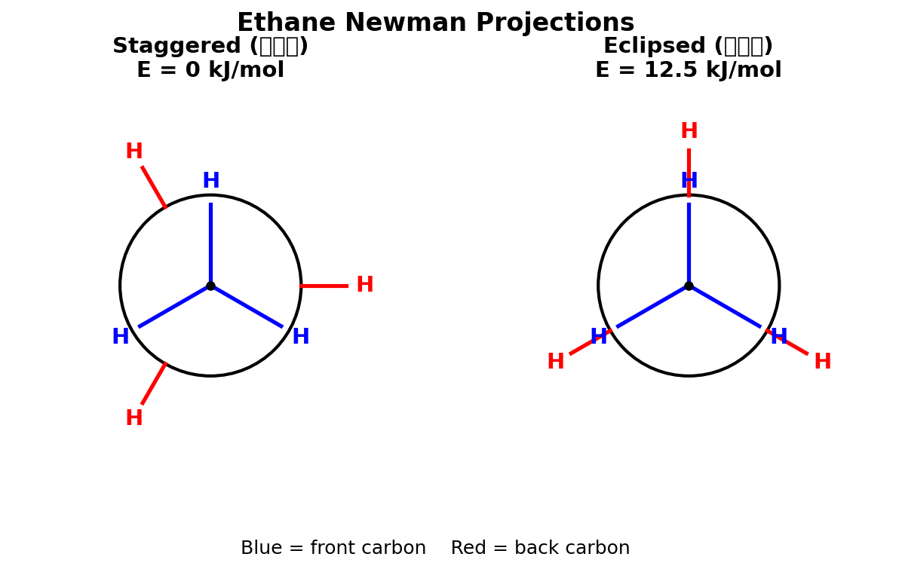
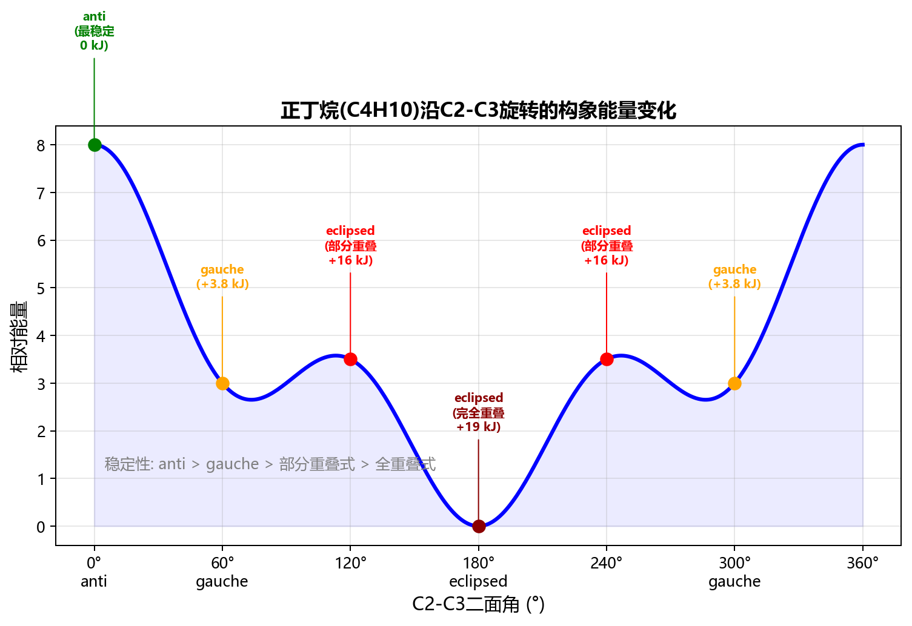
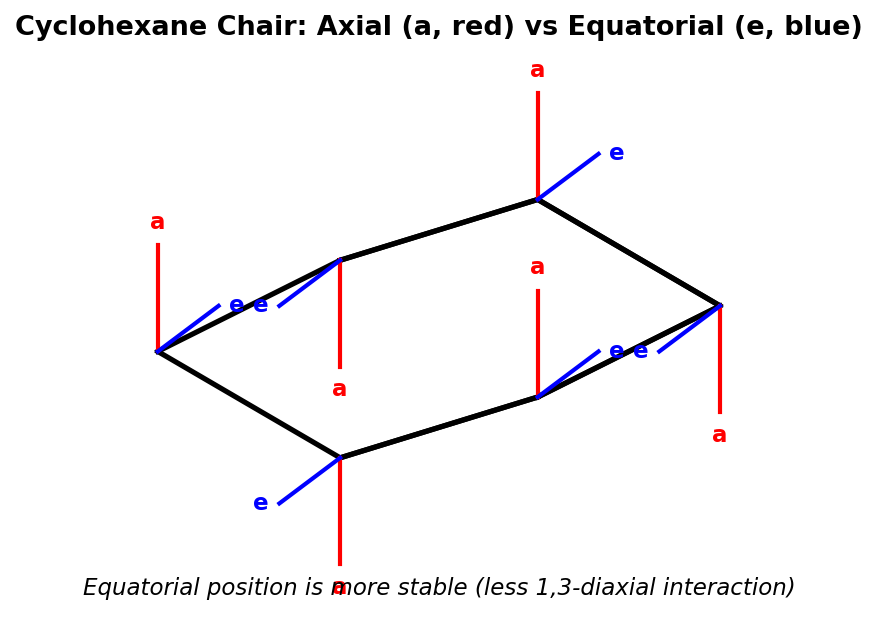
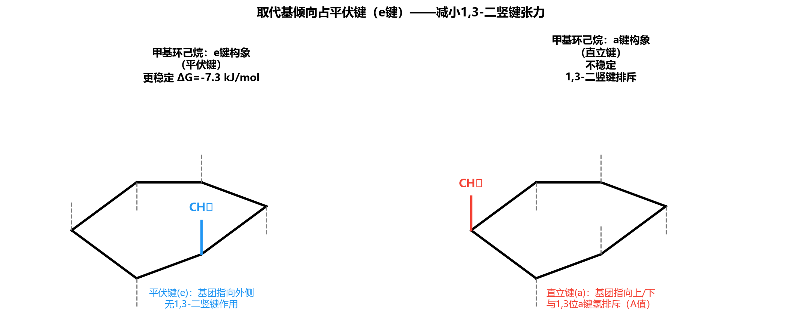
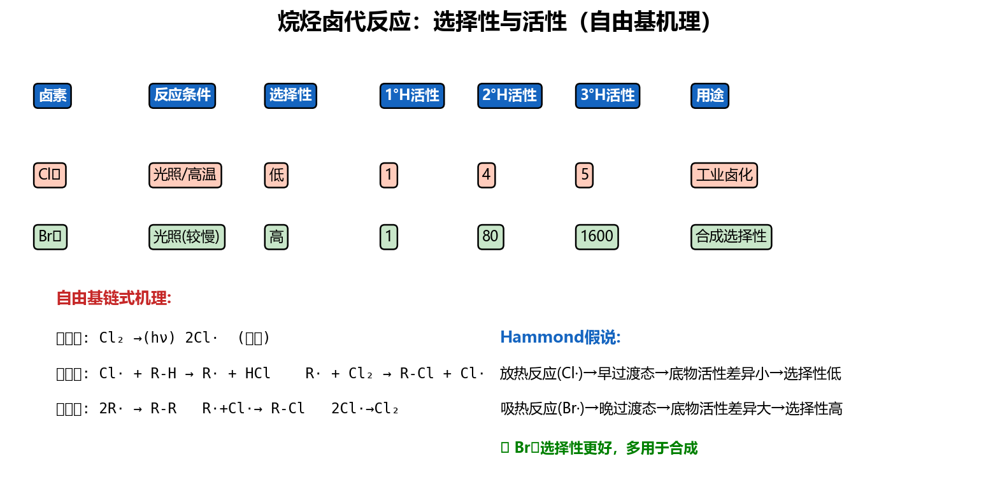
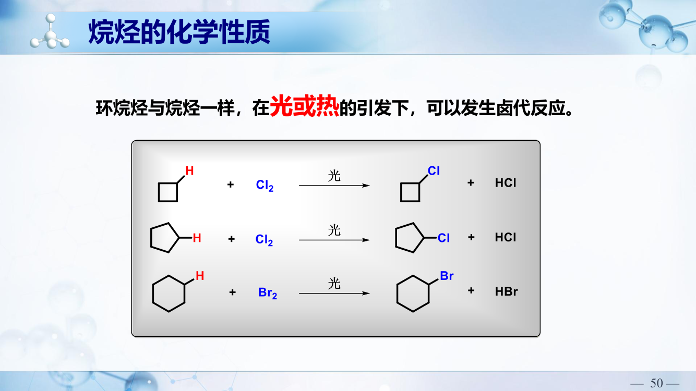
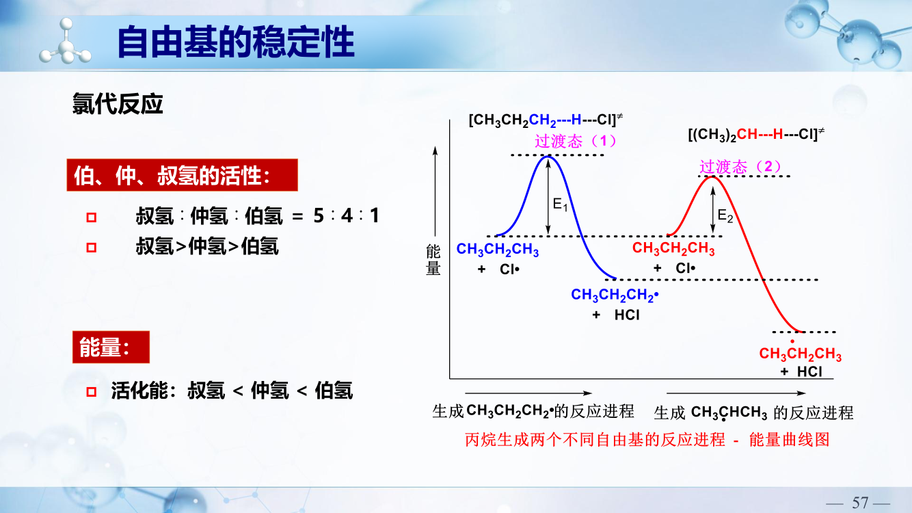
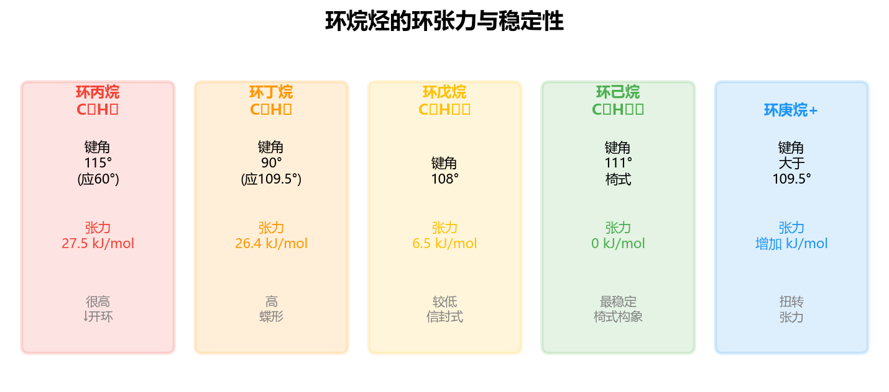

沿C−C键轴方向观察：前碳=圆心+三条线；后碳=圆+三条线
交叉式(staggered)比重叠式(eclipsed)稳定（扭转应变小）

乙烷旋转能垒 = 12.0 kJ/mol（全重叠→全交叉的能量差）
| 构象 | H−H关系 | 相对能量 | 稳定性 |
|---|---|---|---|
| 对位交叉(anti) | CH3对位180° | 0 (最低) | 最稳定 |
| 邻位交叉(gauche) | CH3邻位60° | +3.8 kJ/mol | 次稳定 |
| 部分重叠 | CH3与H重叠 | +16 kJ/mol | 不稳定 |
| 全重叠 | 两CH3重叠0° | +19 kJ/mol | 最不稳定 |


| 基团 | A值/(kJ/mol) | 基团 | A值/(kJ/mol) |
|---|---|---|---|
| F | 0.6 | CH3 | 7.1 |
| Cl | 2.2 | CH2CH3 | 7.3 |
| Br | 2.0 | CH(CH3)2 | 9.2 |
| OH | 3.6 | C(CH3)3 | 22.8 |
| COOH | 5.6 | Ph(C6H5) | 12.6 |
A值越大 → 越强烈要求占e键。叔丁基的A值极大，几乎100%占e键（"构象锁"）。

能量从低到高：椅式(最稳定) < 扭船式 < 船式 < 半椅式(最不稳定)
旗杆氢排斥：船式构象中C1和C4上的两个axial氢（旗杆氢）指向环内同侧，距离仅约1.83Å，产生强烈的van der Waals排斥，是船式不稳定的主要原因之一。
十氢萘是萘完全加氢的产物，由两个共用一条边的环己烷稠合而成。存在顺式(cis)和反式(trans)两种异构体：
反-十氢萘比顺-十氢萘更稳定，因为反式稠合中两个环都能保持理想的全交叉椅式构象，无额外的gauche相互作用。
环戊烷不是平面结构。平面环戊烷会有严重的重叠式扭转张力(10对H-H重叠)。实际上环戊烷采取信封式(envelope)构象，其中四个碳共面，一个碳翘起。这种褶皱(puckering)消除了大部分扭转张力。
引发(Initiation)：X2 →(hv/Δ)→ 2X·（均裂）
传递(Propagation)：
① R−H + X· → R· + HX（夺氢）
② R· + X2 → R−X + X·（夺卤素）
终止(Termination)：任意两自由基偶联 → 终止链反应
| 1° H | 2° H | 3° H | 选择性 | |
|---|---|---|---|---|
| Cl2 | 1 | 3.8 | 5.0 | 低（几乎无选择性） |
| Br2 | 1 | 82 | 1600 | 极高（几乎只在3°上） |
某位置产物% = (该位置H的个数 × 相对活性) / Σ(各位置H数 × 相对活性)
碳自由基为sp²杂化，平面三角形结构。孤电子占据在垂直于平面的p轨道中。
这种平面结构使得相邻C−H键可以与含孤电子的p轨道发生超共轭作用，从而稳定自由基。
ΔH = Σ(断键键能) − Σ(成键键能)
ΔH < 0 → 放热反应；ΔH > 0 → 吸热反应
例：CH4 + Cl· → CH3· + HCl
ΔH = D(C−H) − D(H−Cl) = 439 − 431 = +8 kJ/mol（微弱吸热）
例：CH4 + Br· → CH3· + HBr
ΔH = D(C−H) − D(H−Br) = 439 − 366 = +73 kJ/mol（明显吸热 → 高选择性）
引发(Initiation)：
Cl−Cl →(hv)→ 2Cl· ΔH = +D(Cl−Cl) = +243 kJ/mol
传递(Propagation)：
步骤①：CH4 + Cl· → CH3· + HCl
断键：D(CH3−H) = 439 kJ/mol
成键：D(H−Cl) = 431 kJ/mol
ΔH1 = 439 − 431 = +8 kJ/mol（微弱吸热）
步骤②：CH3· + Cl2 → CH3Cl + Cl·
断键：D(Cl−Cl) = 243 kJ/mol
成键：D(CH3−Cl) = 350 kJ/mol
ΔH2 = 243 − 350 = −107 kJ/mol（强放热）
总反应热：ΔH = ΔH1 + ΔH2 = 8 + (−107) = −99 kJ/mol（放热反应，热力学有利）
终止(Termination)：
Cl· + Cl· → Cl2
CH3· + Cl· → CH3Cl
CH3· + CH3· → CH3CH3
结论：传递步骤①微弱吸热 → 过渡态类似反应物(早期TS) → 对自由基稳定性不敏感 → Cl2选择性低。
稳定性顺序：3° > 2° > 1° > CH3·（超共轭效应稳定）
对应C-H键BDE(kJ/mol)：
| 键类型 | 示例 | BDE/(kJ/mol) | 自由基类型 |
|---|---|---|---|
| CH3−H | 甲烷 | 439 | 甲基自由基(最不稳定) |
| 1° C−H | CH3CH2−H | 420 | 伯自由基 |
| 2° C−H | (CH3)2CH−H | 413 | 仲自由基 |
| 3° C−H | (CH3)3C−H | 400 | 叔自由基(最稳定) |
BDE越小→键越容易断→生成的自由基越稳定。碳自由基稳定性的原因：超共轭效应——相邻C-H的σ轨道与自由基p轨道侧面重叠，分散不成对电子的电子密度。连接的烷基越多，超共轭效应越强。



问题：用氯化或溴化来制备目标一卤代烃，判断哪种方法合适？
引发：Br2 →(hv)→ 2Br·
传递：
①(CH3)3CH + Br· → (CH3)3C· + HBr（抽3°H，优先）
②(CH3)3C· + Br2 → (CH3)3CBr + Br·
终止：
Br· + Br· → Br2
(CH3)3C· + Br· → (CH3)3CBr
(CH3)3C· + (CH3)3C· → (CH3)3C-C(CH3)3
| 环大小 | 环张力 | 化学性质 |
|---|---|---|
| 环丙烷 | 很大(115kJ/mol) | 可开环加成：+ HBr → BrCH2CH2CH3；+ Br2 → BrCH2CH2CH2Br |
| 环丁烷 | 较大(110kJ/mol) | 催化加氢可开环，但不如环丙烷活泼 |
| 环戊烷 | 很小(26kJ/mol) | 稳定，类似烷烃 |
| 环己烷 | 无(0) | 最稳定，完全无张力 |

取代环丙烷与HBr加成开环时，遵循类似Markovnikov规则：Br加到含氢较少的碳上（即取代基较多的碳），H加到含氢较多的碳上。
例如：1-甲基环丙烷 + HBr → CH3CBr(CH2CH3)... Br加在甲基所在碳上
C=C + H2 →(Ni/Pd/Pt催化)→ 烷烃
特点：双键完全加氢，产物为对应烷烃。
2RBr + 2Na →(乙醚溶剂)→ R−R + 2NaBr
适用范围：仅适用于合成对称烷烃和环烷烃。常用的卤代烃为溴代烃和碘代烃，一般伯卤代烃产率较高。
局限性：若用两种不同RX，会得到三种产物（R-R、R'-R'、R-R'混合物），无法得到纯净的不对称产物。
2R−X + Zn + 2H+ → 2R−H + ZnX2
Zn作为还原剂给出电子，烷基接受电子，最后再与酸作用得到烷烃。
例：2CH3CH2CHCH3(Br) + Zn →(H+)→ 2CH3CH2CHCH3(H) + ZnBr2
R2CuLi + R'X → R−R' + RCu + LiX
优势：可制备不对称烷烃（R≠R'），是Wurtz反应的重要改进。
制备步骤：2RLi + CuI → R2CuLi + LiI（先制备二烷基铜锂）
PPT具体实例：(CH3)2CuLi + CH3(CH2)3CH2I →(干醚, 25°C, 3.5h)→ CH3(CH2)3CH2CH3 + CH3Cu + LiI，产率98%
利用[4+2]环加成反应（Diels-Alder反应）可以制备环己烯及其衍生物。
完全氧化（燃烧）：CnH2n+2 + (3n+1)/2 O2 → nCO2 + (n+1)H2O
催化可控氧化：烷烃在催化剂存在下，可被O2部分氧化为羧酸：
RCH2CH2R' + O2 →(MnO2催化, 110°C)→ RCOOH + R'COOH
在无氧高温(约800°C)条件下，C−C键断裂，大分子烷烃裂解为小分子烷烃 + 烯烃。
例：CH3CH2CH2CH3 →(800°C)→ CH2=CH2 + CH3CH3 等
工业意义：石油裂解制乙烯、丙烯等重要化工原料。
CH4 →(Cl2/hv)→ CH3Cl →(Cl2/hv)→ CH2Cl2 →(Cl2/hv)→ CHCl3 →(Cl2/hv)→ CCl4
实际反应中四种产物同时生成；通过控制Cl2与CH4的比例来调节主产物：
(a) 三者分子量相同(C5H12, M=72)，仅形状不同。
| 化合物 | bp/°C | 形状 |
|---|---|---|
| 正戊烷 | 36 | 线性，表面积最大 |
| 异戊烷 | 28 | 一个支链，较紧凑 |
| 新戊烷 | 9.5 | 球形，表面积最小 |
答：正戊烷(36°C) > 异戊烷(28°C) > 新戊烷(9.5°C)
(b) 醇有氢键，烷烃无。醇之间比较：正丁醇分子最为线性→分子间氢键和London力都最强。叔丁醇球形且OH被甲基位阻包围。
答：正丁醇(118°C) > 仲丁醇(99°C) > 叔丁醇(82°C) > 正戊烷(36°C)
(a) 正丁烷沿C2-C3（前碳C2连H,H,CH3；后碳C3连H,H,CH3）：
| 构象 | 二面角 | 类型 | 相对能量 |
|---|---|---|---|
| anti(对位交叉) | 180° | 两CH3反式 | 0(最稳定) |
| gauche(邻位交叉) | 60°/300° | 两CH3邻位 | +3.8 kJ/mol |
| 部分重叠 | 120°/240° | CH3/H重叠 | +16 kJ/mol |
| 全重叠(syn) | 0° | 两CH3重叠 | +19 kJ/mol(最不稳定) |
(b) 2-甲基丁烷沿C2-C3：前碳C2连H, CH3, CH3；后碳C3连H, H, CH3。
最稳定：anti构象，后碳CH3与前碳H对位(180°)，两个前碳CH3分别与后碳两个H交叉。
最不稳定：syn构象，后碳CH3与前碳一个CH3完全重叠(0°)。
(a) trans-1,4-二甲基环己烷：
1,4位trans=一个在上一个在下(平面环参考)。椅式中1,4位关系：
| 构象 | C1-CH3 | C4-CH3 | 1,3-二轴作用 |
|---|---|---|---|
| 构象A | e | e | 0个gauche |
| 构象B(翻环) | a | a | 4个gauche(每个a-CH3有2个) |
答：构象A(双e)为优势构象，几乎100%以此存在。trans-1,4→双e可能，非常稳定。
(b) cis-1,3-二甲基环己烷：
1,3位cis=同侧。椅式中：
| 构象 | C1-CH3 | C3-CH3 | 说明 |
|---|---|---|---|
| 构象A | e | e | 双e，无1,3-二轴作用 ✓ |
| 构象B | a | a | 双a，有严重1,3-二轴相互作用 ✗ |
答：构象A(双e)为优势构象。cis-1,3也能实现双e！
(c) trans-4-叔丁基环己醇：
叔丁基A值≈23 kJ/mol，锁定在e位（翻环代价太大）。trans意味OH与tBu在异侧：tBu在e位→OH也在e位（trans-1,4→双e）。
答：叔丁基e位，OH也是e位。这就是"叔丁基锁定法"——用tBu固定环的构象来研究其他取代基的反应行为。
(a) 异丁烷 + Cl2：
结构：(CH3)3CH → 有9个1°H和1个3°H。
| 产物 | H数 | 活性 | 相对量 | 比例 |
|---|---|---|---|---|
| 异丁基氯(1°) | 9 | 1 | 9 | 9/14 = 64% |
| 叔丁基氯(3°) | 1 | 5 | 5 | 5/14 = 36% |
尽管3°H活性高5倍，但只有1个3°H vs 9个1°H，所以氯代选择性不高→1°产物仍为主要产物！
(b) 2-甲基丁烷 + Br2：
结构：CH3CH(CH3)CH2CH3 → 6个1°H(两个CH3在C1和C4)，2个2°H(C3)，1个3°H(C2)，3个1°H(C4的CH3)。总：9个1°H，2个2°H，1个3°H。
| 位置 | H数 | 活性 | 相对量 | 比例 |
|---|---|---|---|---|
| 1°位 | 9 | 1 | 9 | 9/1773 ≈ 0.5% |
| 2°位(C3) | 2 | 82 | 164 | 164/1773 ≈ 9.2% |
| 3°位(C2) | 1 | 1600 | 1600 | 1600/1773 ≈ 90.3% |
答：溴代高度选择性→几乎只得到3°溴代产物(~90%)。这就是溴代的合成价值所在！
引发：Cl-Cl → 2Cl• （ΔH° = +243 kJ/mol，需要光或热）
增长（两步循环）：
步骤1：CH4 + Cl• → CH3• + HCl
ΔH° = BDE(CH3-H) − BDE(H-Cl) = 439 − 431 = +8 kJ/mol（微吸热）
步骤2：CH3• + Cl2 → CH3Cl + Cl•
ΔH° = BDE(Cl-Cl) − BDE(CH3-Cl) = 243 − 350 = −107 kJ/mol（放热）
总反应：CH4 + Cl2 → CH3Cl + HCl
ΔH°(总) = 8 + (−107) = −99 kJ/mol（放热反应）
终止（任意两个自由基结合）：
Cl• + Cl• → Cl2
CH3• + Cl• → CH3Cl
CH3• + CH3• → C2H6
(a) 环丙烷的角张力：理想sp3角=109.5°，环丙烷实际键角=60°，偏差49.5°→巨大角张力(~115 kJ/mol环张力)。C-C键弯曲成"香蕉键"，电子密度在环外侧→类似π键→可被亲电试剂进攻开环。
环己烷无角张力(键角≈111°接近理想值)，无开环倾向。
(b) trans-1,2-二甲基环丙烷：
C1和C2各连(H, CH3, 环上两个C)→各为手性碳。trans=两个CH3在环平面异侧。
立体异构体：(1R,2R)和(1S,2S)→一对对映体。有手性，是手性分子。
而cis-1,2-二甲基环丙烷为(1R,2S)=内消旋体(meso)，无旋光性。
A = 甲基环丁烷（C5H10）
验证：
注：题目"催化加氢得到甲基环丁烷"应理解为"A本身就是甲基环丁烷"——在常规条件下催化加氢环丁烷不开环，所以这句话的意思是确认A的碳骨架为甲基环丁烷。
主链越长→沸点越高；支链越多→沸点越低。因此：(5)>(1)>(2)>(3)>(4)
(1) 1,2-二溴乙烷：两个Br体积大、电负性强，对位交叉(anti)最稳定（Br-Br距离最远）。
(2) 乙二醇：虽然anti位减少位阻，但OH...OH形成分子内氢键→gauche构象更稳定。
(3) 2-氟乙醇：F与OH形成分子内氢键→gauche构象更稳定。
(4) 反-1-叔丁基-2-甲基环己烷：反式1,2-二取代→可实现双e构象。叔丁基A值极大，锁定e位，甲基也在e位。
(5) 顺-1-异丙基-3-甲基环己烷：顺式1,3-二取代→可实现双e构象（两基团都在e位）。
解析：对于环己烷来说，平伏键越多，越稳定；而对于六元环以下的环状化合物，环越小，越不稳定。
| 比较 | 结论 | 原因 |
|---|---|---|
| (1) 顺 vs 反-1,2-二甲基 | 反式更稳定 | 反式可双e；顺式为一a一e |
| (2) 顺 vs 反-1,3-二甲基 | 顺式更稳定 | 顺式可双e；反式为一a一e |
| (3) 顺 vs 反-1,4-二甲基 | 反式更稳定 | 反式可双e；顺式为一a一e |
| (4) 三种环烷烃 | 环戊烷 > 甲基环丁烷 > 乙基环丙烷 | 环越大张力越小 |
自由基稳定性排序原则：碳自由基中的碳原子所连的烷基越多，稳定性越高。
排序：3°自由基 > 2°自由基 > 1°自由基 > 甲基自由基
解题方法：依次切断分子中每一条C-C键，写出两个自由基片段，最后将所有自由基按稳定性排序。